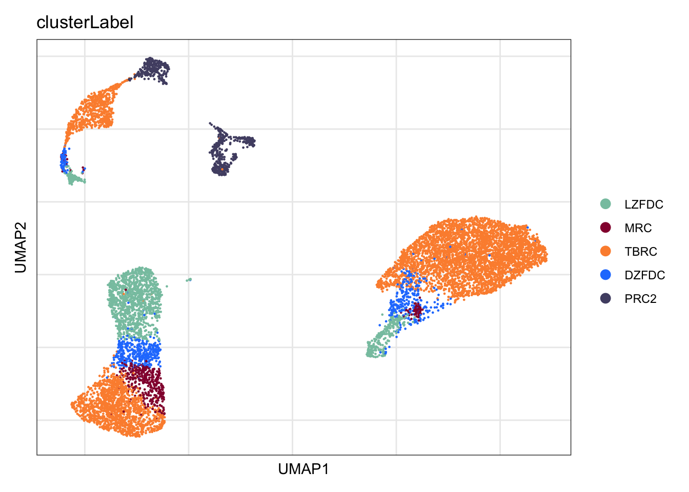
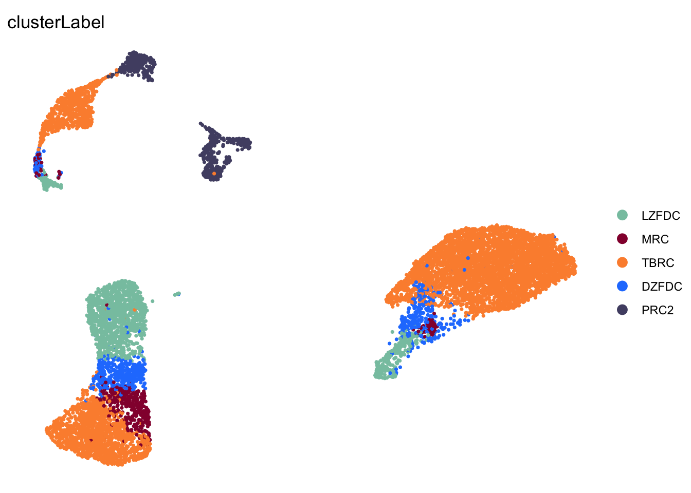

vis fol BRCs merged
Mechthild Lütge
29 Sept 2020
Last updated: 2021-06-29
Checks: 6 1
Knit directory: CrossSLO_BRC_CXCL13/
This reproducible R Markdown analysis was created with workflowr (version 1.6.2). The Checks tab describes the reproducibility checks that were applied when the results were created. The Past versions tab lists the development history.
The R Markdown is untracked by Git. To know which version of the R Markdown file created these results, you’ll want to first commit it to the Git repo. If you’re still working on the analysis, you can ignore this warning. When you’re finished, you can run wflow_publish to commit the R Markdown file and build the HTML.
Great job! The global environment was empty. Objects defined in the global environment can affect the analysis in your R Markdown file in unknown ways. For reproduciblity it’s best to always run the code in an empty environment.
The command set.seed(20210519) was run prior to running the code in the R Markdown file. Setting a seed ensures that any results that rely on randomness, e.g. subsampling or permutations, are reproducible.
Great job! Recording the operating system, R version, and package versions is critical for reproducibility.
Nice! There were no cached chunks for this analysis, so you can be confident that you successfully produced the results during this run.
Great job! Using relative paths to the files within your workflowr project makes it easier to run your code on other machines.
Great! You are using Git for version control. Tracking code development and connecting the code version to the results is critical for reproducibility.
The results in this page were generated with repository version e40d554. See the Past versions tab to see a history of the changes made to the R Markdown and HTML files.
Note that you need to be careful to ensure that all relevant files for the analysis have been committed to Git prior to generating the results (you can use wflow_publish or wflow_git_commit). workflowr only checks the R Markdown file, but you know if there are other scripts or data files that it depends on. Below is the status of the Git repository when the results were generated:
Ignored files:
Ignored: .Rhistory
Ignored: .Rproj.user/
Ignored: data/processedData/
Untracked files:
Untracked: analysis/IntegrateAcrossSLOs.Rmd
Untracked: analysis/mergeData.Rmd
Untracked: analysis/visFolBRC_individualSLOs.Rmd
Untracked: analysis/visFolBRC_merged.Rmd
Untracked: analysis/vis_plus_summarizeData.Rmd
Untracked: figure/
Untracked: metadata.txt
Unstaged changes:
Modified: analysis/CharacterizationLN_CXCL13seurat.Rmd
Modified: analysis/CharacterizePP_CXCL13seurat.Rmd
Modified: analysis/CharacterizeSpleen_CXCL13seurat.Rmd
Modified: analysis/index.Rmd
Note that any generated files, e.g. HTML, png, CSS, etc., are not included in this status report because it is ok for generated content to have uncommitted changes.
There are no past versions. Publish this analysis with wflow_publish() to start tracking its development.
load packages
suppressPackageStartupMessages({
library(tidyverse)
library(Seurat)
library(magrittr)
library(dplyr)
library(purrr)
library(ggplot2)
library(here)
library(runSeurat3)
library(SingleCellExperiment)
library(RColorBrewer)
library(viridis)
library(ggsci)
library(pheatmap)
library(muscat)
})set dir and read input data
basedir <- here()
seurat <- readRDS(file=paste0(basedir, "/data/folBRC_allSLO_seurat.rds"))
seurat <-rerunSeurat3(seurat)Modularity Optimizer version 1.3.0 by Ludo Waltman and Nees Jan van Eck
Number of nodes: 9560
Number of edges: 327051
Running Louvain algorithm...
Maximum modularity in 10 random starts: 0.9344
Number of communities: 9
Elapsed time: 0 seconds
Modularity Optimizer version 1.3.0 by Ludo Waltman and Nees Jan van Eck
Number of nodes: 9560
Number of edges: 327051
Running Louvain algorithm...
Maximum modularity in 10 random starts: 0.8803
Number of communities: 11
Elapsed time: 0 seconds
Modularity Optimizer version 1.3.0 by Ludo Waltman and Nees Jan van Eck
Number of nodes: 9560
Number of edges: 327051
Running Louvain algorithm...
Maximum modularity in 10 random starts: 0.8582
Number of communities: 14
Elapsed time: 0 seconds
Modularity Optimizer version 1.3.0 by Ludo Waltman and Nees Jan van Eck
Number of nodes: 9560
Number of edges: 327051
Running Louvain algorithm...
Maximum modularity in 10 random starts: 0.9070
Number of communities: 10
Elapsed time: 0 secondscolPal <- c("#FF9933", "#660000","#CC6600", "#FF6666", "#389055")
names(colPal) <- c("LZFDC","MRC","DZFDC","TBRC", "PRC2")
colorSLO <- c(viridis(3)[c(1,2)], brewer.pal(n=9, name="YlOrRd")[c(4)])
colorCond <- brewer.pal(n=3, name="Paired")[c(1,2)]
colorSLOCond <- c("#440154FF","#807DBA", "#FEB24C", "#F16913", "#21908CFF")
colorBatch <- pal_igv()(n=length(unique(seurat$batch)))
colCl <- c(rcartocolor::carto_pal(name="Safe"),pal_aaas()(8))
names(colorSLO) <- c("LN", "PP", "Spleen")
names(colorCond) <- c("naive", "immunized")
names(colorBatch) <- unique(seurat$batch)
names(colorSLOCond) <- c("LN_immunized","LN_naive", "Spleen_naive",
"Spleen_immunized", "PP_immunized")vis fol BRCs
clusterlabel
DimPlot(seurat, reduction = "umap", cols=colPal, group.by = "clusterLabel")+
theme_bw() +
theme(axis.text = element_blank(), axis.ticks = element_blank(),
panel.grid.minor = element_blank()) +
xlab("UMAP1") +
ylab("UMAP2")
DimPlot(seurat, reduction = "umap", cols=colPal, group.by = "clusterLabel",
shuffle=T,pt.size=0.6)+
theme_void()
cond
DimPlot(seurat, reduction = "umap", cols=colorSLOCond,
group.by = "SLO_plus_cond")+
theme_bw() +
theme(axis.text = element_blank(), axis.ticks = element_blank(),
panel.grid.minor = element_blank()) +
xlab("UMAP1") +
ylab("UMAP2")
DimPlot(seurat, reduction = "umap", cols=colorSLOCond,
group.by = "SLO_plus_cond",
shuffle=T,pt.size=0.6)+
theme_void()
vis fol BRCs downsampled
Idents(seurat) <- seurat$SLO_plus_clusterlabel
seuratSub <- subset(seurat, downsample = 300)
seuratSub <- rerunSeurat3(seuratSub)Modularity Optimizer version 1.3.0 by Ludo Waltman and Nees Jan van Eck
Number of nodes: 3361
Number of edges: 114087
Running Louvain algorithm...
Maximum modularity in 10 random starts: 0.9503
Number of communities: 9
Elapsed time: 0 seconds
Modularity Optimizer version 1.3.0 by Ludo Waltman and Nees Jan van Eck
Number of nodes: 3361
Number of edges: 114087
Running Louvain algorithm...
Maximum modularity in 10 random starts: 0.9081
Number of communities: 11
Elapsed time: 0 seconds
Modularity Optimizer version 1.3.0 by Ludo Waltman and Nees Jan van Eck
Number of nodes: 3361
Number of edges: 114087
Running Louvain algorithm...
Maximum modularity in 10 random starts: 0.8892
Number of communities: 12
Elapsed time: 0 seconds
Modularity Optimizer version 1.3.0 by Ludo Waltman and Nees Jan van Eck
Number of nodes: 3361
Number of edges: 114087
Running Louvain algorithm...
Maximum modularity in 10 random starts: 0.9307
Number of communities: 10
Elapsed time: 0 secondsseuratSub <- RunUMAP(object = seuratSub,
min.dist = 0.6,
spread = 1,
reduction = "pca",
dims = 1:20)clusterlabel
DimPlot(seuratSub, reduction = "umap", cols=colPal, group.by = "clusterLabel")+
theme_bw() +
theme(axis.text = element_blank(), axis.ticks = element_blank(),
panel.grid.minor = element_blank()) +
xlab("UMAP1") +
ylab("UMAP2")
DimPlot(seuratSub, reduction = "umap", cols=colPal, group.by = "clusterLabel",
pt.size=1, shuffle = T)+
theme_void()
cond
DimPlot(seurat, reduction = "umap", cols=colorSLOCond,
group.by = "SLO_plus_cond")+
theme_bw() +
theme(axis.text = element_blank(), axis.ticks = element_blank(),
panel.grid.minor = element_blank()) +
xlab("UMAP1") +
ylab("UMAP2")
DimPlot(seuratSub, reduction = "umap", cols=colorSLOCond,
group.by = "SLO_plus_cond",
pt.size=1, shuffle = T)+
theme_void()
Featureplot
features <- c("ENSMUSG00000071005.Ccl19","ENSMUSG00000023078.Cxcl13")
FeaturePlot(seuratSub,
features = features,
blend = TRUE,
cols = c("lightgrey", "#9b2929", "#145aa2"))
Ridgeplots
colPal2 <- c(colPal, colPal, colPal)
names(colPal2) <- c(paste0("LN_", names(colPal)), paste0("PP_", names(colPal)),
paste0("Spleen_", names(colPal)))
RidgePlot(seuratSub, features = features, ncol = 2,
cols=colPal2, group.by = "SLO_plus_clusterlabel")
avg heatmap selected marker
avgHeatmap <- function(seurat, selGenes, colVecIdent, colVecCond=NULL,
ordVec=NULL, gapVecR=NULL, gapVecC=NULL,cc=FALSE,
cr=FALSE, condCol=FALSE){
selGenes <- selGenes$gene
## assay data
clusterAssigned <- as.data.frame(Idents(seurat)) %>%
dplyr::mutate(cell=rownames(.))
colnames(clusterAssigned)[1] <- "ident"
seuratDat <- GetAssayData(seurat)
## genes of interest
genes <- data.frame(gene=rownames(seurat)) %>%
mutate(geneID=gsub("^.*\\.", "", gene)) %>% filter(geneID %in% selGenes)
## matrix with averaged cnts per ident
logNormExpres <- as.data.frame(t(as.matrix(
seuratDat[which(rownames(seuratDat) %in% genes$gene),])))
logNormExpres <- logNormExpres %>% dplyr::mutate(cell=rownames(.)) %>%
dplyr::left_join(.,clusterAssigned, by=c("cell")) %>%
dplyr::select(-cell) %>% dplyr::group_by(ident) %>%
dplyr::summarise_all(mean)
logNormExpresMa <- logNormExpres %>% dplyr::select(-ident) %>% as.matrix()
rownames(logNormExpresMa) <- logNormExpres$ident
logNormExpresMa <- t(logNormExpresMa)
rownames(logNormExpresMa) <- gsub("^.*?\\.","",rownames(logNormExpresMa))
## remove genes if they are all the same in all groups
ind <- apply(logNormExpresMa, 1, sd) == 0
logNormExpresMa <- logNormExpresMa[!ind,]
genes <- genes[!ind,]
## color columns according to cluster
annotation_col <- as.data.frame(gsub("(^.*?_)","",
colnames(logNormExpresMa)))%>%
dplyr::mutate(celltype=gsub("(_.*$)","",colnames(logNormExpresMa)))
colnames(annotation_col)[1] <- "col1"
annotation_col <- annotation_col %>%
dplyr::mutate(cond = gsub("(^[0-9]_?)","",col1)) %>%
dplyr::select(cond, celltype)
rownames(annotation_col) <- colnames(logNormExpresMa)
ann_colors = list(
cond = colVecCond,
celltype=colVecIdent)
if(is.null(ann_colors$cond)){
annotation_col$cond <- NULL
}
## adjust order
logNormExpresMa <- logNormExpresMa[selGenes,]
if(is.null(ordVec)){
ordVec <- levels(seurat)
}
logNormExpresMa <- logNormExpresMa[,ordVec]
colVecScale <- colorRampPalette(c("#2166AC", "#F7F7F7", "#B2182B"))(30)
colVecScale <- c(rep(colVecScale[1], 10), colVecScale, rep(colVecScale[30], 10))
## scaled row-wise
pheatmap(logNormExpresMa, scale="row" ,treeheight_row = 0, cluster_rows = cr,
cluster_cols = cc,
color = colVecScale,
annotation_col = annotation_col, cellwidth=15, cellheight=10,
annotation_colors = ann_colors, gaps_row = gapVecR, gaps_col = gapVecC)
}Idents(seurat) <- seurat$SLO_plus_clusterlabel
selMarker <- list(Chemokine = c("Cxcl13", "Cxcl12", "Ccl19"),
valMarker = c("Cr2", "Madcam1", "Tnfsf11"),
PRCMarker = c("Cd34", "Pi16")
)
selGenes <- data.frame(gene=unlist(selMarker)) %>%
rownames_to_column(var="grp") %>% mutate(Grp=gsub(".{1}$", "", grp))
grpCnt <- selGenes %>% group_by(Grp) %>% summarise(cnt=n())
gapR <- data.frame(Grp=unique(selGenes$Grp)) %>%
left_join(.,grpCnt, by="Grp") %>% mutate(cumSum=cumsum(cnt))
ordVec <- levels(seurat)[c(4,5,2,1,3,8,9,10,7,6,15,12,13,11,14)]
gapC <- c(5,10)
pOut <- avgHeatmap(seurat = seurat, selGenes = selGenes,
colVecIdent = colorSLO,
ordVec=ordVec,
gapVecR=gapR$cumSum, gapVecC=gapC,cc=F,
cr=F, condCol=T, colVecCond = colPal)
session info
sessionInfo()R version 4.1.0 (2021-05-18)
Platform: x86_64-apple-darwin17.0 (64-bit)
Running under: macOS Catalina 10.15.7
Matrix products: default
BLAS: /Library/Frameworks/R.framework/Versions/4.1/Resources/lib/libRblas.dylib
LAPACK: /Library/Frameworks/R.framework/Versions/4.1/Resources/lib/libRlapack.dylib
locale:
[1] en_US.UTF-8/en_US.UTF-8/en_US.UTF-8/C/en_US.UTF-8/en_US.UTF-8
attached base packages:
[1] parallel stats4 stats graphics grDevices utils datasets methods base
other attached packages:
[1] muscat_1.6.0 pheatmap_1.0.12 ggsci_2.9
[4] viridis_0.6.1 viridisLite_0.4.0 RColorBrewer_1.1-2
[7] SingleCellExperiment_1.14.1 SummarizedExperiment_1.22.0 Biobase_2.52.0
[10] GenomicRanges_1.44.0 GenomeInfoDb_1.28.0 IRanges_2.26.0
[13] S4Vectors_0.30.0 BiocGenerics_0.38.0 MatrixGenerics_1.4.0
[16] matrixStats_0.59.0 runSeurat3_0.1.0 here_1.0.1
[19] magrittr_2.0.1 SeuratObject_4.0.2 Seurat_4.0.3
[22] forcats_0.5.1 stringr_1.4.0 dplyr_1.0.7
[25] purrr_0.3.4 readr_1.4.0 tidyr_1.1.3
[28] tibble_3.1.2 ggplot2_3.3.5 tidyverse_1.3.1
loaded via a namespace (and not attached):
[1] scattermore_0.7 bit64_4.0.5 knitr_1.33
[4] irlba_2.3.3 DelayedArray_0.18.0 data.table_1.14.0
[7] rpart_4.1-15 KEGGREST_1.32.0 RCurl_1.98-1.3
[10] doParallel_1.0.16 generics_0.1.0 ScaledMatrix_1.0.0
[13] cowplot_1.1.1 RSQLite_2.2.7 RANN_2.6.1
[16] future_1.21.0 bit_4.0.4 spatstat.data_2.1-0
[19] xml2_1.3.2 lubridate_1.7.10 httpuv_1.6.1
[22] assertthat_0.2.1 xfun_0.24 hms_1.1.0
[25] jquerylib_0.1.4 evaluate_0.14 promises_1.2.0.1
[28] fansi_0.5.0 progress_1.2.2 caTools_1.18.2
[31] dbplyr_2.1.1 readxl_1.3.1 igraph_1.2.6
[34] DBI_1.1.1 geneplotter_1.70.0 htmlwidgets_1.5.3
[37] spatstat.geom_2.2-0 ellipsis_0.3.2 RSpectra_0.16-0
[40] backports_1.2.1 annotate_1.70.0 deldir_0.2-10
[43] sparseMatrixStats_1.4.0 vctrs_0.3.8 Cairo_1.5-12.2
[46] ROCR_1.0-11 abind_1.4-5 cachem_1.0.5
[49] withr_2.4.2 sctransform_0.3.2 prettyunits_1.1.1
[52] goftest_1.2-2 cluster_2.1.2 lazyeval_0.2.2
[55] crayon_1.4.1 genefilter_1.74.0 labeling_0.4.2
[58] edgeR_3.34.0 pkgconfig_2.0.3 vipor_0.4.5
[61] nlme_3.1-152 blme_1.0-5 rlang_0.4.11
[64] globals_0.14.0 lifecycle_1.0.0 miniUI_0.1.1.1
[67] modelr_0.1.8 rsvd_1.0.5 cellranger_1.1.0
[70] rprojroot_2.0.2 polyclip_1.10-0 lmtest_0.9-38
[73] Matrix_1.3-4 boot_1.3-28 zoo_1.8-9
[76] reprex_2.0.0 beeswarm_0.4.0 ggridges_0.5.3
[79] GlobalOptions_0.1.2 png_0.1-7 rjson_0.2.20
[82] bitops_1.0-7 KernSmooth_2.23-20 Biostrings_2.60.1
[85] blob_1.2.1 DelayedMatrixStats_1.14.0 workflowr_1.6.2
[88] shape_1.4.6 parallelly_1.26.0 beachmat_2.8.0
[91] scales_1.1.1 memoise_2.0.0 plyr_1.8.6
[94] ica_1.0-2 gplots_3.1.1 zlibbioc_1.38.0
[97] compiler_4.1.0 clue_0.3-59 lme4_1.1-27.1
[100] DESeq2_1.32.0 fitdistrplus_1.1-5 cli_2.5.0
[103] XVector_0.32.0 lmerTest_3.1-3 listenv_0.8.0
[106] patchwork_1.1.1 pbapply_1.4-3 TMB_1.7.20
[109] MASS_7.3-54 mgcv_1.8-36 tidyselect_1.1.1
[112] stringi_1.6.2 highr_0.9 yaml_2.2.1
[115] BiocSingular_1.8.1 locfit_1.5-9.4 ggrepel_0.9.1
[118] grid_4.1.0 sass_0.4.0 tools_4.1.0
[121] future.apply_1.7.0 circlize_0.4.13 rstudioapi_0.13
[124] foreach_1.5.1 git2r_0.28.0 gridExtra_2.3
[127] farver_2.1.0 Rtsne_0.15 digest_0.6.27
[130] shiny_1.6.0 Rcpp_1.0.6 broom_0.7.8
[133] scuttle_1.2.0 later_1.2.0 RcppAnnoy_0.0.18
[136] httr_1.4.2 AnnotationDbi_1.54.1 ComplexHeatmap_2.8.0
[139] colorspace_2.0-2 rvest_1.0.0 XML_3.99-0.6
[142] fs_1.5.0 tensor_1.5 reticulate_1.20
[145] splines_4.1.0 uwot_0.1.10 spatstat.utils_2.2-0
[148] scater_1.20.1 plotly_4.9.4.1 xtable_1.8-4
[151] jsonlite_1.7.2 nloptr_1.2.2.2 rcartocolor_2.0.0
[154] R6_2.5.0 pillar_1.6.1 htmltools_0.5.1.1
[157] mime_0.11 glue_1.4.2 fastmap_1.1.0
[160] minqa_1.2.4 BiocParallel_1.26.0 BiocNeighbors_1.10.0
[163] codetools_0.2-18 utf8_1.2.1 lattice_0.20-44
[166] bslib_0.2.5.1 spatstat.sparse_2.0-0 pbkrtest_0.5.1
[169] numDeriv_2016.8-1.1 ggbeeswarm_0.6.0 colorRamps_2.3
[172] leiden_0.3.8 gtools_3.9.2 survival_3.2-11
[175] limma_3.48.1 glmmTMB_1.1.1 rmarkdown_2.9
[178] munsell_0.5.0 GetoptLong_1.0.5 GenomeInfoDbData_1.2.6
[181] iterators_1.0.13 variancePartition_1.22.0 haven_2.4.1
[184] reshape2_1.4.4 gtable_0.3.0 spatstat.core_2.2-0 date()[1] "Tue Jun 29 18:02:26 2021"
sessionInfo()R version 4.1.0 (2021-05-18)
Platform: x86_64-apple-darwin17.0 (64-bit)
Running under: macOS Catalina 10.15.7
Matrix products: default
BLAS: /Library/Frameworks/R.framework/Versions/4.1/Resources/lib/libRblas.dylib
LAPACK: /Library/Frameworks/R.framework/Versions/4.1/Resources/lib/libRlapack.dylib
locale:
[1] en_US.UTF-8/en_US.UTF-8/en_US.UTF-8/C/en_US.UTF-8/en_US.UTF-8
attached base packages:
[1] parallel stats4 stats graphics grDevices utils datasets methods base
other attached packages:
[1] muscat_1.6.0 pheatmap_1.0.12 ggsci_2.9
[4] viridis_0.6.1 viridisLite_0.4.0 RColorBrewer_1.1-2
[7] SingleCellExperiment_1.14.1 SummarizedExperiment_1.22.0 Biobase_2.52.0
[10] GenomicRanges_1.44.0 GenomeInfoDb_1.28.0 IRanges_2.26.0
[13] S4Vectors_0.30.0 BiocGenerics_0.38.0 MatrixGenerics_1.4.0
[16] matrixStats_0.59.0 runSeurat3_0.1.0 here_1.0.1
[19] magrittr_2.0.1 SeuratObject_4.0.2 Seurat_4.0.3
[22] forcats_0.5.1 stringr_1.4.0 dplyr_1.0.7
[25] purrr_0.3.4 readr_1.4.0 tidyr_1.1.3
[28] tibble_3.1.2 ggplot2_3.3.5 tidyverse_1.3.1
loaded via a namespace (and not attached):
[1] scattermore_0.7 bit64_4.0.5 knitr_1.33
[4] irlba_2.3.3 DelayedArray_0.18.0 data.table_1.14.0
[7] rpart_4.1-15 KEGGREST_1.32.0 RCurl_1.98-1.3
[10] doParallel_1.0.16 generics_0.1.0 ScaledMatrix_1.0.0
[13] cowplot_1.1.1 RSQLite_2.2.7 RANN_2.6.1
[16] future_1.21.0 bit_4.0.4 spatstat.data_2.1-0
[19] xml2_1.3.2 lubridate_1.7.10 httpuv_1.6.1
[22] assertthat_0.2.1 xfun_0.24 hms_1.1.0
[25] jquerylib_0.1.4 evaluate_0.14 promises_1.2.0.1
[28] fansi_0.5.0 progress_1.2.2 caTools_1.18.2
[31] dbplyr_2.1.1 readxl_1.3.1 igraph_1.2.6
[34] DBI_1.1.1 geneplotter_1.70.0 htmlwidgets_1.5.3
[37] spatstat.geom_2.2-0 ellipsis_0.3.2 RSpectra_0.16-0
[40] backports_1.2.1 annotate_1.70.0 deldir_0.2-10
[43] sparseMatrixStats_1.4.0 vctrs_0.3.8 Cairo_1.5-12.2
[46] ROCR_1.0-11 abind_1.4-5 cachem_1.0.5
[49] withr_2.4.2 sctransform_0.3.2 prettyunits_1.1.1
[52] goftest_1.2-2 cluster_2.1.2 lazyeval_0.2.2
[55] crayon_1.4.1 genefilter_1.74.0 labeling_0.4.2
[58] edgeR_3.34.0 pkgconfig_2.0.3 vipor_0.4.5
[61] nlme_3.1-152 blme_1.0-5 rlang_0.4.11
[64] globals_0.14.0 lifecycle_1.0.0 miniUI_0.1.1.1
[67] modelr_0.1.8 rsvd_1.0.5 cellranger_1.1.0
[70] rprojroot_2.0.2 polyclip_1.10-0 lmtest_0.9-38
[73] Matrix_1.3-4 boot_1.3-28 zoo_1.8-9
[76] reprex_2.0.0 beeswarm_0.4.0 ggridges_0.5.3
[79] GlobalOptions_0.1.2 png_0.1-7 rjson_0.2.20
[82] bitops_1.0-7 KernSmooth_2.23-20 Biostrings_2.60.1
[85] blob_1.2.1 DelayedMatrixStats_1.14.0 workflowr_1.6.2
[88] shape_1.4.6 parallelly_1.26.0 beachmat_2.8.0
[91] scales_1.1.1 memoise_2.0.0 plyr_1.8.6
[94] ica_1.0-2 gplots_3.1.1 zlibbioc_1.38.0
[97] compiler_4.1.0 clue_0.3-59 lme4_1.1-27.1
[100] DESeq2_1.32.0 fitdistrplus_1.1-5 cli_2.5.0
[103] XVector_0.32.0 lmerTest_3.1-3 listenv_0.8.0
[106] patchwork_1.1.1 pbapply_1.4-3 TMB_1.7.20
[109] MASS_7.3-54 mgcv_1.8-36 tidyselect_1.1.1
[112] stringi_1.6.2 highr_0.9 yaml_2.2.1
[115] BiocSingular_1.8.1 locfit_1.5-9.4 ggrepel_0.9.1
[118] grid_4.1.0 sass_0.4.0 tools_4.1.0
[121] future.apply_1.7.0 circlize_0.4.13 rstudioapi_0.13
[124] foreach_1.5.1 git2r_0.28.0 gridExtra_2.3
[127] farver_2.1.0 Rtsne_0.15 digest_0.6.27
[130] shiny_1.6.0 Rcpp_1.0.6 broom_0.7.8
[133] scuttle_1.2.0 later_1.2.0 RcppAnnoy_0.0.18
[136] httr_1.4.2 AnnotationDbi_1.54.1 ComplexHeatmap_2.8.0
[139] colorspace_2.0-2 rvest_1.0.0 XML_3.99-0.6
[142] fs_1.5.0 tensor_1.5 reticulate_1.20
[145] splines_4.1.0 uwot_0.1.10 spatstat.utils_2.2-0
[148] scater_1.20.1 plotly_4.9.4.1 xtable_1.8-4
[151] jsonlite_1.7.2 nloptr_1.2.2.2 rcartocolor_2.0.0
[154] R6_2.5.0 pillar_1.6.1 htmltools_0.5.1.1
[157] mime_0.11 glue_1.4.2 fastmap_1.1.0
[160] minqa_1.2.4 BiocParallel_1.26.0 BiocNeighbors_1.10.0
[163] codetools_0.2-18 utf8_1.2.1 lattice_0.20-44
[166] bslib_0.2.5.1 spatstat.sparse_2.0-0 pbkrtest_0.5.1
[169] numDeriv_2016.8-1.1 ggbeeswarm_0.6.0 colorRamps_2.3
[172] leiden_0.3.8 gtools_3.9.2 survival_3.2-11
[175] limma_3.48.1 glmmTMB_1.1.1 rmarkdown_2.9
[178] munsell_0.5.0 GetoptLong_1.0.5 GenomeInfoDbData_1.2.6
[181] iterators_1.0.13 variancePartition_1.22.0 haven_2.4.1
[184] reshape2_1.4.4 gtable_0.3.0 spatstat.core_2.2-0